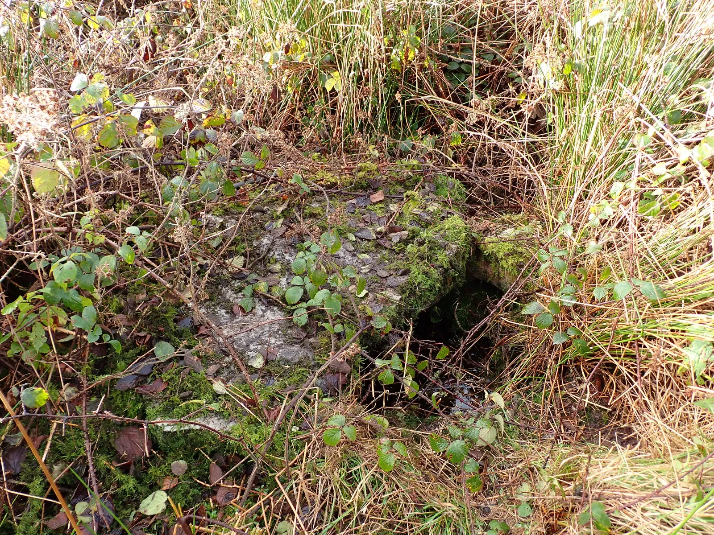

Barratoor
Barratoor in Irish “Barr an Tuair” meaning the top of the bleach or green field according to John O’Donovan is 263.97 acres or 106.82 hectares in size and is in the Electoral division of Drumkeary.
In the 1841 census there were 183 people and 29 houses and in the 1851 census the population had fallen to 148 people and 27 houses. The landlords of Barratoor were the Burkes of Marble Hill. There are approximately 21 houses in Barratoor at the time of writing (2026).

Barratoor borders Allygola, Callatra, Drumkeary East, Kyleaglannawood, Larraga, Ross, Tonroe and Tooreen South.
Population
Map
Placenames
| Name | Type | Notes |
|---|---|---|
| The Corner of the Wood | wood | |
| The Black Garden | field | |
| The Pond Hill | hill or hills | |
| The Baunoge | field | Pronounced “The Bawnyoge”. |
| The Slide Stone | rock or rocks | Location not exact. |
| Fahy’s | field | |
| McKeigue’s Field | field | |
| The Long Field | field | |
| Coarsepark | field | |
| The Bull Field | field | |
| Gleann an Tobar | well | Pronounced “Glannatubber”. |
| The Duck Pond | marsh | It was also called “The Swamp”. |
| Cruckawnamwigga | hill or hills | |
| Children’s Burial Ground | graveyard, cemetary, burial ground | Location not exact, but it was said there was a Children’s Burial Ground in this area. |
| Mag’s Well | well | |
| Bullaun Stone | rock or rocks | St. Patrick is said to have knelt here. The water in the indentation is said to have a cure for warts. |
Houses
| Name | Notes |
|---|---|
| Haugh’s House | |
| McKeigue’s House | |
| Kennedy’s House | |
| Joe Kylie’s House | |
| Bruton’s House | |
| Burke’s House | |
| Dennis Daly’s House | |
| Johnny Callanan’s House | |
| Delaney’s House | Exact location uncertain but this family were evicted by the landlord and made to build this house on the mountain. |
| Grady’s House | Julia and Martin Grady. |
| Burke’s House | This was a school. |
| Callanan’s House | Then Reid’s. |
| John Gardiner’s House |